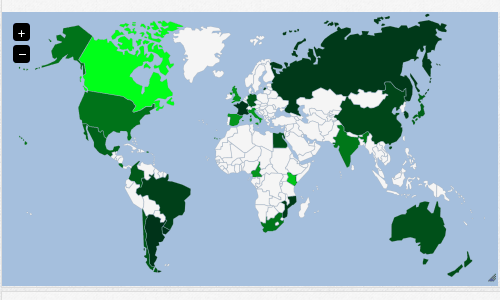
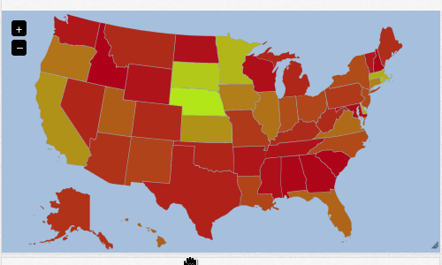

Region Map¶


Fields¶
Bold field names are required fields, others are optional.
| Field Name | Type | Description |
|---|---|---|
| val | Number | Number to user for action |
| label | Text | Identifier for the serie of this value |
| color | Color | Line color |
| action | Text | Name of the action, by default “add” |
Actions¶
add¶
Increase the value identified by label by val or 1 if val isn’t provided.
Useful to accumulate by an identifier.
substract¶
Decrease the value identified by label by val or 1 if val isn’t provided.
set¶
Set the value identified by label to val or 1 if val isn’t provided.
remove¶
Removes the value identified by label from the displayed values.